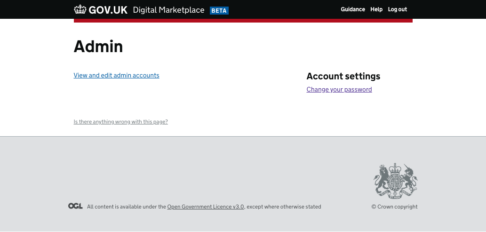
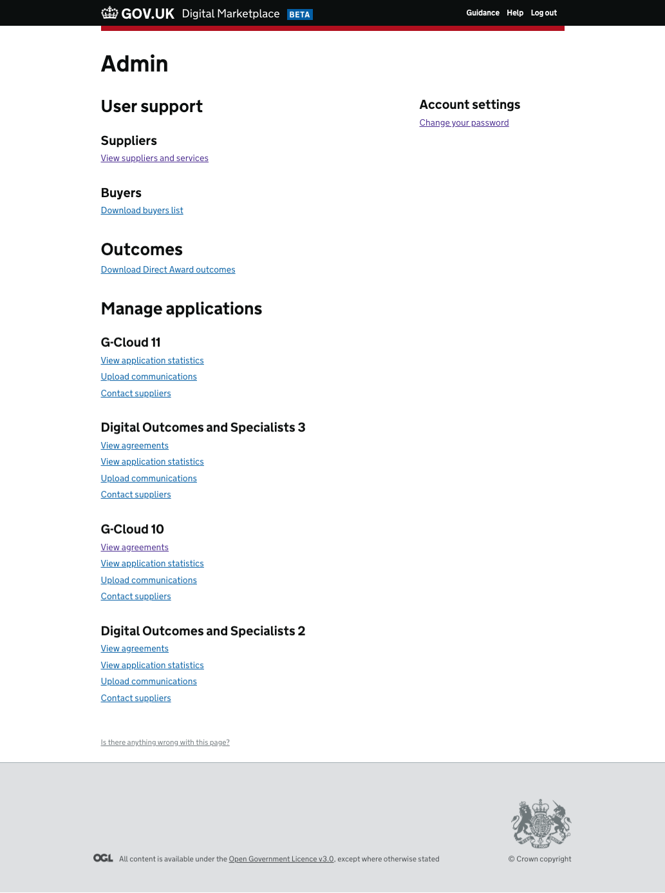
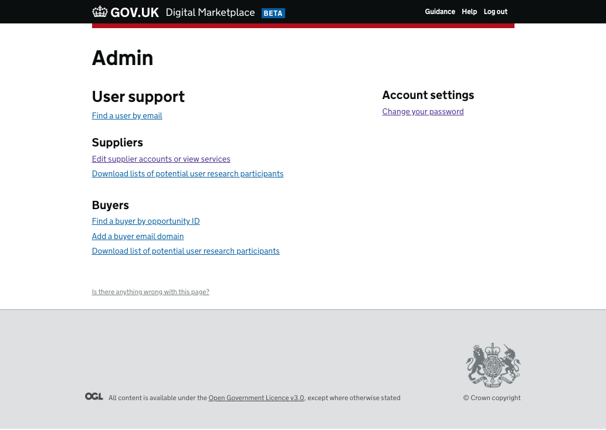
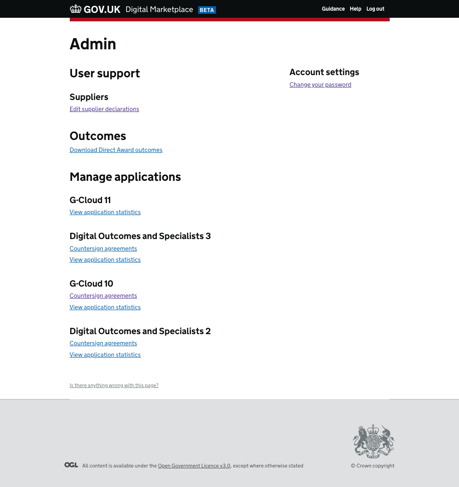
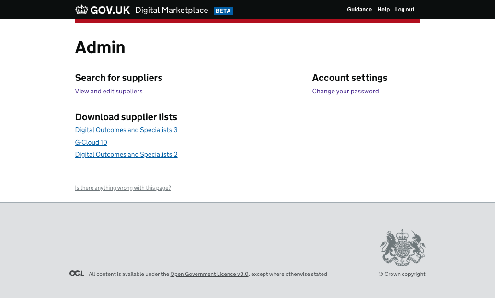
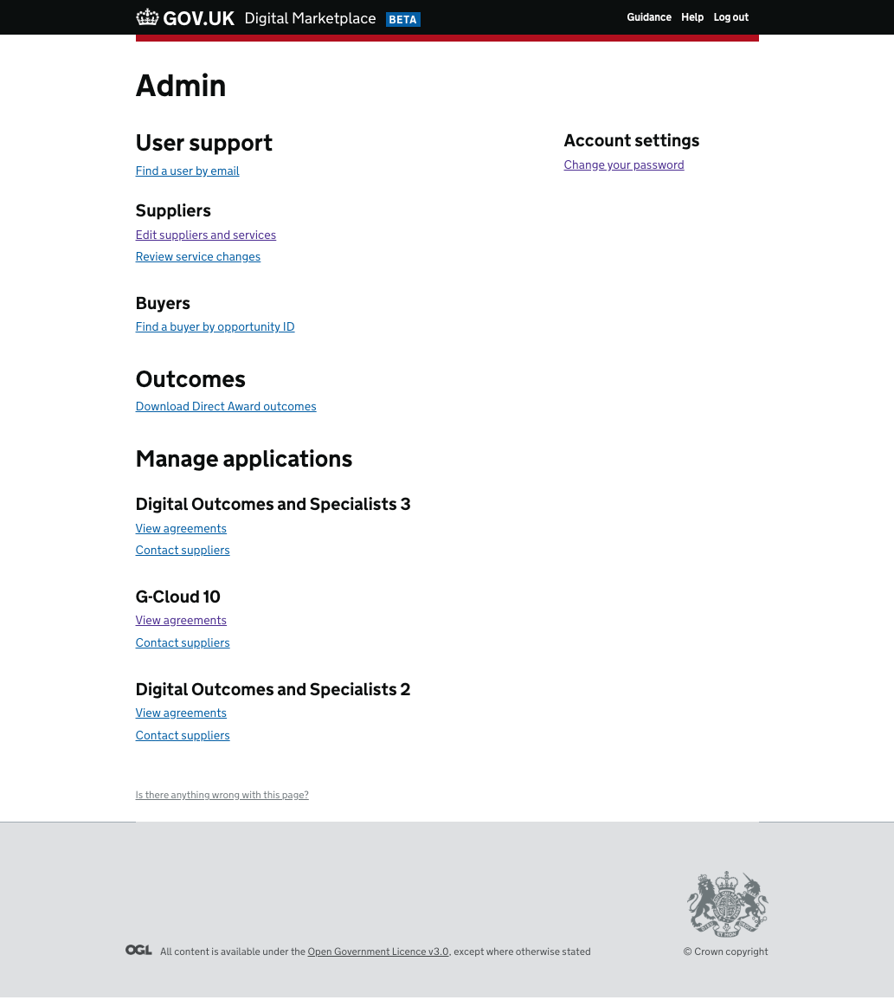

Users¶
Contents
Note
This section is designed to give the reasoning for the different user types on Digital Marketplace.
For information on the data stored for a given user type head to the Entities and what they are section.
Digital Marketplace facilitates Buyers buying things from Suppliers. It also allows Admins to self serve reports, and to view and update data. The activities an admin can undertake depends on what type of admin role they are logged in as.
For security reasons, users are logged out after 1 hour of inactivity. ‘Activity’ means refreshing a page, navigating to a new page, or submitting a form.
Buyers¶
buyer user accounts are created by public sector buyers. The email address a buyer user signs up with must have a
domain that matches one of the domains registered as belonging to a public sector organisation on the Digital Marketplace.
A Buyer user account enables a user to:
Create, update, delete, and award G-Cloud ‘direct award’ searches
Create, update, delete, and award Digital Outcomes and Specialists ‘further competition’ briefs
Answer questions from suppliers about their briefs
Approved email domains¶
The list of public sector email domains is stored in the database’s buyer_email_domains table. The list is not
exhaustive (i.e. it doesn’t currently contain domains for every public sector organisation).
Administrator accounts with the admin role are able to add domains to this list. The full list is viewable at
the buyer-email-domains API endpoint (an api
token is required). Currently there is no way for a non-developer to view this list.
The validation function that checks if an email address is valid is
defined in the api.
It checks that the email address ends with an approved domain. This means that subdomains usually don’t need to be
added, e.g. gov.uk already exists so newdepartment.gov.uk should not be added (the admin frontend will prevent
you from doing so).
Suppliers¶
supplier user accounts are for members of an organisation (company) that want to sell services to the public sector
buyers. There can be many supplier user accounts for one supplier organisation. These additional accounts are, in some
places, referred to as contributors however there is no functional difference between a supplier and a contributor account.
At the point of initial registration of a supplier organisation a supplier user account is created for the individual signing up the organisation. This individual can then invite others to create accounts and contribute to the management of the organisation’s Digital Marketplace account.
When a supplier organisation is initially registered with Digital Marketplace they need to provide a DUNS Number. This is expected to be unique and is a way for us to prevent the same organisation registering multiple times.
A Supplier user account enables a user to:
Apply to a framework on behalf of their organisation (when a framework is open for applications) by:
(optional) Ask clarification questions about a framework/ framework iteration
Completing a declaration
Adding services
Uploading a signed framework agreement
Edit their services
Create, edit and delete responses to a buyers brief/ opportunity
Ask clarification questions about a brief
Admins¶
There are 6 types of admin account; admin, admin-manager, admin-framework-manager, admin-ccs-sourcing,
admin-ccs-data-controller and admin-ccs-category.
Note that these account types are displayed using more user friendly labels in the admin interface, the mappings can be found in the digitalmarketplace-admin-frontend codebase.
They are designed to mirror the roles and responsibilities of the users that are assigned these accounts.
For futher information on admin roles and responsibilities see:
Admin Roles/ Permissions Google sheet
Some ‘admin’ tasks need to be carried out by a developer. See Support Tasks.
admin-manager¶
The sole responsibility of the admin-manager type is to distribute invitations to other admin users; therefore this user has access only to the invite and suspend admin users tasks.
There is only one admin-manager on production and its username and password are kept in the credentials repo.
admin-framework-manager¶
This role gives the user the ability to view and download user data as well as upload documents and clarification questions.
The admin framework manager is generally the GDS product manager that is managing a framework opening.
admin¶
Supporting user accounts
The admin role is given to users who need to conduct support tasks (inc. developers). It allows the user to view details about services and user accounts as well as managing supplier information and accounts.
admin-ccs-sourcing¶
Auditing framework applications
These users can check/edit declarations and countersign framework agreements. They are mainly concerned with the supplier onboarding process at the beginning of a framework’s lifecycle.
admin-ccs-data-controller¶
Managing data
These users can edit supplier information. They ensure consistency of data between CCS sources (Salesforce SFTC and Supplier Registration Service) and the Digital Marketplace.
admin-ccs-category¶
Managing services
These users can edit and remove a supplier’s services. These are CCS users who manage the framework offerings while the framework is live.
